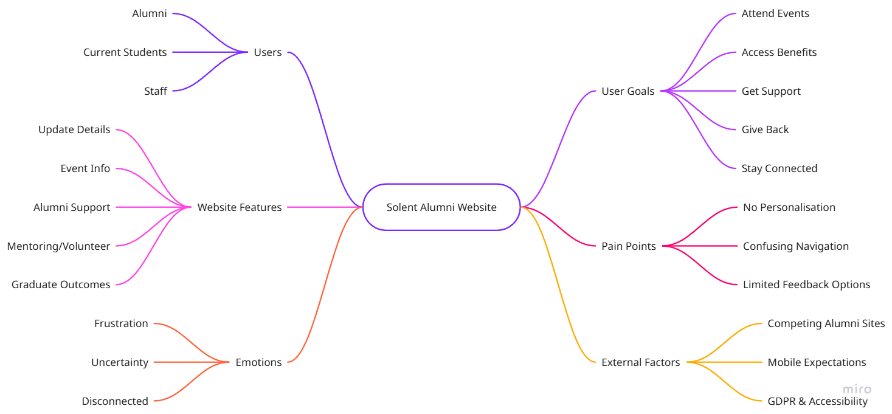
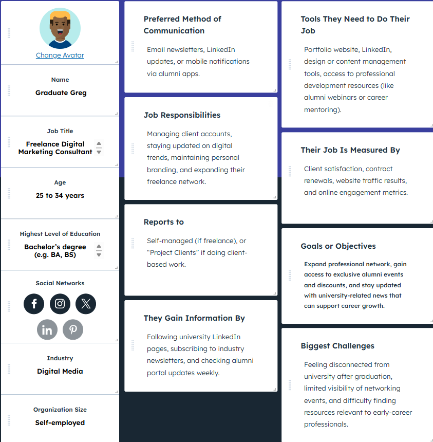
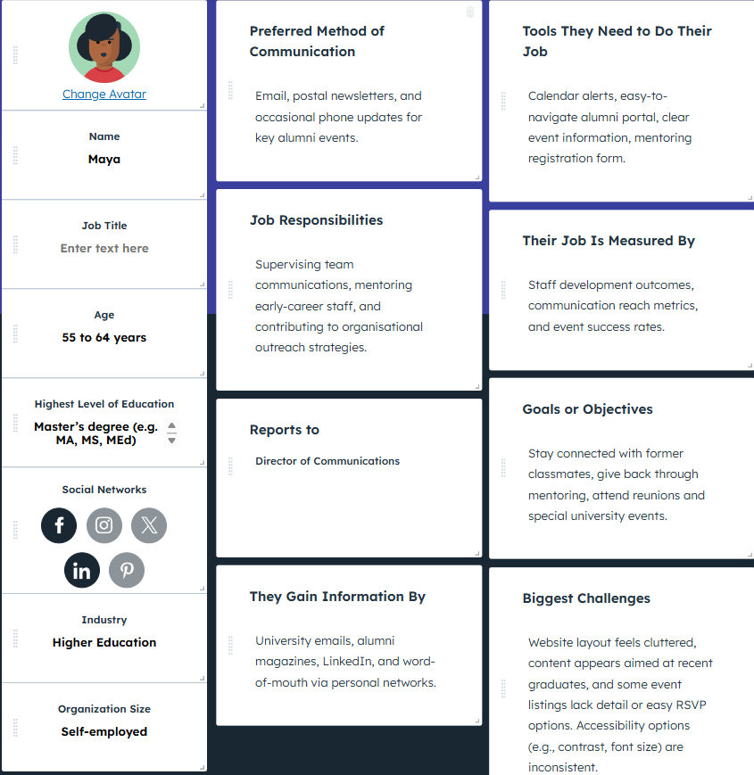
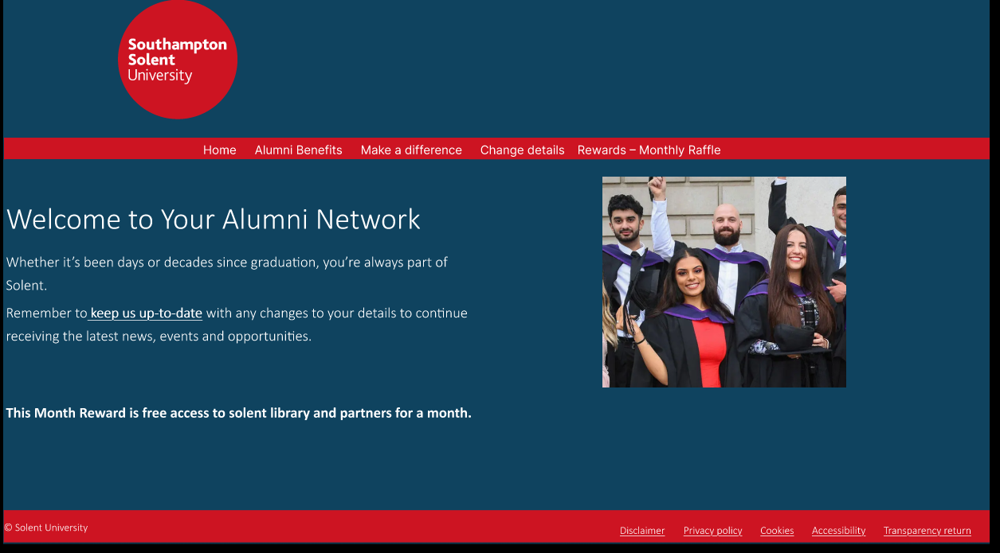
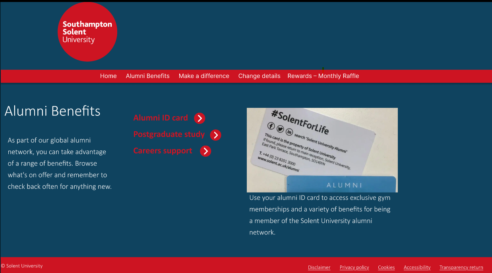
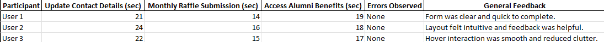

Overview
This project analysed the existing Solent Alumni website and proposed a redesign aimed at improving engagement, clarity, accessibility, and task completion. The work combined business needs with user needs by focusing on two alumni personas and the key tasks they were likely to perform on the site.
What Was Produced
- User research artefacts including personas and journey maps for two different alumni profiles.
- Task analysis focused on core actions such as updating contact details, exploring benefits, and engaging with alumni incentives.
- A comparative review of the current site versus a redesigned proposal using HCI principles.
- Prototype screens for a revised homepage, alumni benefits area, and monthly raffle interaction.
- A small usability test measuring three core tasks across three participants.
Design Reasoning
- The redesign combined User-Centred Design with Task-Centred Design to support both broad engagement goals and repeated transactional tasks.
- Pain points identified in the existing experience included limited personalisation, confusing structure, and weak feedback after key actions.
- The prototype applied HCI principles including Gestalt grouping, feedback, consistency, Fitts’s Law, and WCAG-aware contrast and text sizing.
- A monthly raffle feature was introduced as a mechanism to encourage repeat visits and longer-term alumni engagement.
Testing Evidence
The usability testing table shows three participants completing the selected tasks without observed errors. Reported timings ranged from 21 to 24 seconds for updating contact details, 14 to 16 seconds for monthly raffle submission, and 17 to 19 seconds for accessing alumni benefits. Feedback described the interface as clear, intuitive, and helped by visible confirmation and hover-driven content disclosure.
Portfolio Value
This is a strong UX portfolio piece because it demonstrates structured design thinking rather than just visual mockups. The project shows how user research, task analysis, design principles, and testing can be combined into a coherent redesign case study with visible before-to-after reasoning.






Key Metrics
Project Positioning
This project is best presented as a UX case study rather than a coded product. The strongest public material is the research-to-prototype-to-testing flow: personas, pain points, prototype screens, and testing results all work together to show methodical interface redesign.
Project planning visuals such as the Gantt chart and mind map were reviewed but not included because they are weaker portfolio evidence than the personas, prototype screens, and testing outputs.